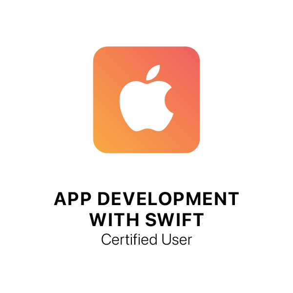

Resume
About Me
I'm a full-stack software engineer with over 15 years of experience. I'm interested primarily in Web and mobile app development. I have used many languages for development projects including JavaScript, VB, VB.Net, C# and more recently iOS Swift. I've done mobile app development using using Xcode, Xamarin and Visual Studio. I am also well-versed in relational database design and have worked primarily with SQL Server, including SSIS packages and SQL Server Reporting Services. I enjoy creating user-centered UIs and solving problems.
Since 2018 I have been teaching coding and robotics in the Alpine Union school district. My latest adventure is teaching computer science courses to high school students through UCSD Extended Studies. I have taught iOS Swift Programming, Front End Web Development and currently co-teach Robotics with JavaScript. I also teach coding camps to elementary students through Sally Ride Science at UCSD Extended Studies.
Programming Languages:
- HTML5
- CSS3
- JavaScript
- iOS Swift
- ASP.Net
- C#
- T-SQL
- Scratch
Robotics:
- KUBO
- Ozobots
- Dexter robotic arm
Education
UC San Diego Extended Studies
Certificate - iOS Swift Programming
2021
University of California San Diego
Bachelor of Arts - Communication
1997
Licenses & Certifications
App Development with Swift Certified User
Apple
Oct 2021
See credential
Work Experience
Instructor - Program Your Future
UC San Diego Extended Studies
Sep 2019 - Present
- Teach asynchronous online iOS Swift and Front End Web Technologies courses to high school students in partner schools
- Wrote curriculum for Front End Web Technologies course - HTML5 and CSS
- Co-wrote curriculum for Robotics with JavaScript series of courses
- Choose reading materials, videos and podcasts relevant to coursework
- Assign topics for discussion
- Facilitate online discussions
- Assign reading, projects and quizzes
- Grade assignments and provide feedback to students
Instructor - Sally Ride Science
UC San Diego Extended Studies
Sep 2019 - Present
- Teach in-person and live online Scratch coding camps for Sally Ride Science Academy
- Create Scratch course in Canvas Learning Management System
- Facilitate class discussions
- Assign hands-on projects that foster learning and creativity
- Grade assignments and provide feedback to students
- Manage a classroom of diverse personalities and varied skill levels while keeping all students engaged
Coding & Robotics Instructor - Wheel of Experts
Alpine Education Foundation
Sep 2018 - Present
- Teach screenless coding to kindergarteners using KUBO coding robot
- Teach coding concepts to 1st and 2nd graders using Ozobot Evo robot and Color Codes curriculum
- Teach coding concepts to 3rd graders using Ozobot Evo robot and Ozoblockly programming language
- Teach coding concepts to 4th and 5th graders using Scratch programming language
- Participate in planning meetings and provide feedback and suggestions to program director
- Interface with teachers to modify existing curriculum to be age appropriate
- Write new curriculum as needed to supplement existing curriculum
Senior Software Engineer
LPL Financial
Sep 2008 - Jul 2011
- Worked with a team of developers on n-tier workflow applications that automate business processes and provide status reports
- Authored Software Design Documents for new software applications
- Developed ASP.Net web applications and Windows services using C#
- Implemented complex business logic to facilitate workflow processing
- Leveraged proprietary frameworks to build Windows services to host .Net remoting calls
- Utilized existing services to communicate with SQL Server Integration Services packages
- Worked directly with release management team to deploy web applications, databases and Windows services
- Created installers and set up automated builds in Team Foundation System to facilitate daily builds and automated deployments to a testing environment
- Supported users during acceptance testing
- Provided third level production support to users after deployment of new applications
Software Developer
Viejas Enterprises
Dec 2006 - Sep 2008
- Involved in all aspects of software development life cycle for multiple projects
- Responsible for gathering requirements from business users and translating those requirements into technical specifications
- Designed ASP.Net 2.0 and 3.5 web applications using C# with a SQL Server 2005 backend
- Created reports for management and finance department using SQL Server Reporting Services
- Leveraged SQL Server Integration Services to perform data extracts
- Unit tested web applications and coordinated testing cycle with business users
- Followed change control process and managed release of new applications into production environment
- Supported users and completed enhancements once applications were in production
Software Engineer
Del Mar Database (acquired by ICE Mortgage Technology in 2011)
Jan 2006 - Nov 2006
- Designed and developed new features for mortgage banking software applications using ASP.Net and C# technologies
- Created custom web applications for Professional Services clients
- Wrote custom Windows Forms application in C# to streamline the software release process for the engineering department
- Authored a data migration application in C# to migrate data between different database schemas
- Provided technical assistance to customers when support personnel were unable to resolve incidents
- Created technical designs from functional requirements and specifications
Web Developer
SYS Technologies (formerly Web Technologies)
Sep 2000 - Jan 2006
- Programmed interactive eLearning courses using HTML, JavaScript and CSS
- Developed database-driven ASP.Net Internet portal using VB.Net, ADO.Net and SQL Server
- Worked as part of a team building a web based Learning Management System written in C#
- Converted high-traffic Volkswagen dealer web site from traditional ASP to ASP.Net
- Implemented search feature for web site using Microsoft Indexing Services and VB.Net
- Programmed dynamic database-driven forms using ASP for Environmental Information Management site information in a database for tracking and reporting purposes
Web Developer
RealAge, Inc. (acquired by ShareCare in 2012)
Jul 1999 - Sep 2000
- Developed assessment modules for health information web site using ASP, HTML, JavaScript, and CSS
- Created rich text e-mails for targeted e-mail campaigns
- Maintained and updated site content
- Debugged code and fixed browser compatibility issues